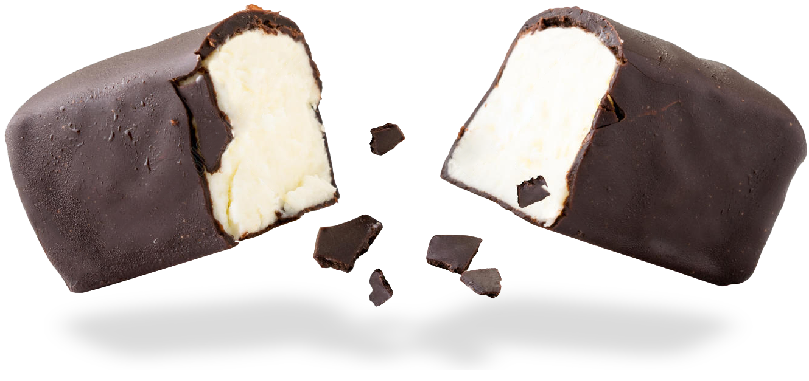

Добро пожаловать в Sweets
Магазин Сырков
Глазированные сырки – небольшие творожные батончики, часто имеющие внутри наполнитель из джема, сгущенки или фруктов, покрытые темным шоколадом – давно стали своего рода ритуалом для завтрака.
